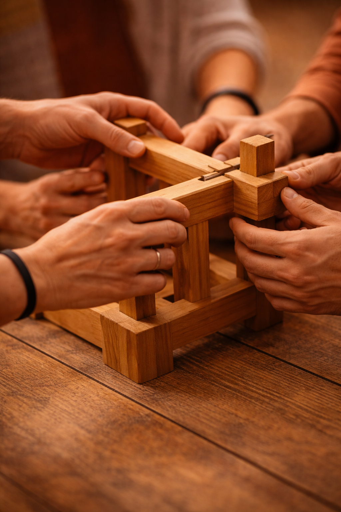

Groei van binnenuit. Voor teams.
De vergaderingen verlopen soepel. Op papier functioneert het team. Maar ondertussen merk je het. Ergernissen die niet uitgesproken worden. De een trekt het karretje, de ander duikt weg. Energie die weglekt zonder dat je kunt aanwijzen waarom.
Herkenbaar?
Teamcoaching is zinvol in heel verschillende situaties, van vastlopen en conflict tot de wens om van goed naar excellent te groeien.
Je hebt het al geprobeerd. Een teamdag, een nieuwe werkwijze, een goed gesprek. Het helpt even. Maar daarna zakt het terug in het oude patroon. Dat komt omdat het probleem niet zit in wat het team doet. Het zit in wat er onder de oppervlakte speelt.
Een reorganisatie, nieuwe teamsamenstelling of een veranderende opdracht. Verandering brengt onzekerheid en vraagt begeleiding om als team goed te landen.
Het gaat redelijk goed, maar de ambitie is meer. Van goed naar excellent, als team bewuster opereren en meer uit ieders kwaliteiten halen.
Werkwijze
Ik maak de onzichtbare dynamiek zichtbaar. Niet door te vertellen wat het team anders moet doen, maar door het team zelf te laten ontdekken wat er speelt. Want de kennis en de oplossing zitten al in het team. Ze komen alleen nog niet tot hun recht.
De rollen die teamleden innemen worden zichtbaar gemaakt en kritisch bekeken. Wie neemt welke rol op zich? Past die rol bij diegene én bij wat het team nodig heeft?
Veiligheid is daarbij geen loze kreet. Het is iets wat actief wordt gecreëerd en continu bespreekbaar blijft. Zodat iedereen zich werkelijk gezien en gehoord voelt en durft te zeggen wat er gezegd moet worden.
De werkvormen zijn actief en energiek. We werken doelgericht, binnen duidelijke kaders, met volop ruimte om te verkennen en te bewegen.

Hoe ziet een traject eruit?
Elk traject begint met luisteren. Wat er daarna komt is altijd op maat, want elk team is anders.
Startfase
Ik voer gesprekken met het team als geheel én met de individuele teamleden. Want om van binnenuit te kunnen werken, moet ik begrijpen wat er bij iedereen speelt. Samen stellen we een heldere ontwikkelvraag op.
Gezamenlijk
De doelen worden niet opgelegd van buitenaf, maar geformuleerd door de mensen die er zelf mee werken. Zo begint de verantwoordelijkheid al vóór de eerste sessie. En groeit de groepsdynamiek vanaf het eerste moment.
Kernfase
De sessies zijn qua vorm, duur en aanpak afgestemd op de ontwikkelvraag. Actief en energiek, binnen duidelijke kaders, met ruimte om te verkennen en te bewegen.
Afsluiting
We sluiten af met een evaluatie en concrete afspraken over hoe het team de opgedane inzichten vasthoudt. Zodat de beweging die is ingezet niet stopt als ik weg ben.
Resultaat
Na een traject werkt het team anders. Niet omdat het moet, maar omdat het klopt. Teamleden spreken elkaar aan, ook als het ongemakkelijk is. De werkdruk is eerlijk verdeeld. Iedereen draagt zijn deel. Het team beweegt mee met wat er nodig is, zonder dat je er steeds achteraan hoeft.
En als er een probleem is? Dan lossen teamleden het samen op. Ze denken met elkaar mee, komen met voorstellen en pakken het gezamenlijk aan. Niet wachten tot iemand anders het oplost. Maar zelf in beweging komen.
Een team dat voor zichzelf én voor elkaar zorgt.
— Kortom
Investering
Elk traject is maatwerk. De omvang van het team, het aantal sessies en de complexiteit van de vraag bepalen samen wat passend is. Daarom werk ik op basis van een offerte na de intake.
Plan een vrijblijvende kennismakingEen vrijblijvende kennismaking is de beste manier om te ontdekken of mijn aanpak aansluit bij wat jullie team nodig heeft.
Plan een kennismaking